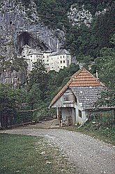

| In Deutsch |
| In Deutsch |
Cave Castles
|  |
Image: cave castle
 Predjamski Grad (Predjama Cave Castle), si. Predjamski Grad (Predjama Cave Castle), si.
|
Cave Castle are castles built into caves. Unlike cave houses, which are mostly artificial dug outs, cave castles are typically built into natural caves. However, the castle is artificial and the caves are often artifically widened, so they are listed here with subterranea.
The word castle often implies something like medieval castles in Europe, so the first idea is that cave castles are found only in Europe. But there are cave castles everywhere on earth were people lived. It seems most cultures on earth needed protection, against enemies or against wild animals. A castle is a small village with a wall around to keep others outside.
So why build castles into caves? This is easy: because it is less work. If you use a cave, typically a entrance portal in a cliff face, you have numerous advantages: The rear side is protected by the mountain itself, and there is shelter by the cave roof, so it is not necessary to built a massive back side or a stable roof. And the front side is often high above the adjacence, so the fortifications at this side are easier to build too.
But there are still more advantages of caves. Many caves have a cave river or some kind of flowing water, which could be used for collecting drinking water. Because this spring is inside the cave, it can not be poisoned by enemies. And some of those caves have other entrances, which - if known only to the people inside the castle - can be used to refill the stock, get more defenders or flee, if necessary. Predjamski Grad in Slowenia has such a back entrance, which was used by the knight Erazmov, who got fresh vegetables and fruits from villages nearby and threw them down to the besiegers to demonstrate his good stock.
 Höhlenburg Loch, de
Höhlenburg Loch, de Castello di Mezzocorona, it
Castello di Mezzocorona, it